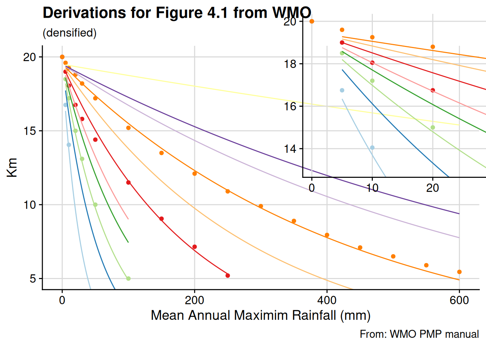

Calculating Probable Maximum Precipitation
Much of this page was built in collaboration with Dr. Kenneth Ekpetere, Dr. Jude Kastens, and Dr. Xingong Li. See the publications lead by Dr. Ekpetere here: Ekpetere, Coll, and Mehta (2025).
Probable Maximum Precipitation
One of the most important limitations we can place on the hydrologic cycle is an upper bounds on the amount of water we can expect to place on a system (within a given time frame). This concept, called probable maximum precipitation, is formally defined as the maximum amount of water (in units of depth) that could be expected for a given location over a given duration. This value is used, in conjunction with design storm specifications and return periods, to appropriately size and design water resource control features ranging in scales from stormwater management to basin wide mega-engineering structures.
One of the most popular means of estimating this metric is with the World Meteorological Organization (WMO) endorsed modification on a procedure known as the Hershfield statistical approach. Hershfield’s initial approach involved taking the general frequency equation X_t = X_n + KS_n where X_t is the rainfall for a return period t, \overline{X_n} and S_m are the mean and standard deviation of a series of annual maximum observations, and K is a frequency dependent scalar based on frequency distribution fittings. If that maximum observed rainfall value (K_m) is substituted for X_t and K_m for k, we arrive at Hershfield’s first proposed form X_t = X_n + K_m S_n.
Given the form of 3, it’s clear that the frequency factor (K^{*}_{t}) exercises significant power over the final value calculated. Without correction, the standard statistical implementation can result in illogical inversions in the calculated depth for a location as you increase the length (e.g. we calculate the depth for a 2 hour storm as 5 in., but the depth for a 6 hour storm might only result in 4.85 in.). To address accuracy and consistency problems that commonly occur with the Hershfield method, the WMO PMP method utilizes a two-stage statistical adjustment. The first stage was designed to mitigate variations in extreme value representation among the precipitation annual maximum value time series (R_t). It’s been shown that as mean precipitation decreases, so too does frequency factor (Sarkar and Maity 2020), which also contributes to an inverted calculation. A second correction was developed to account for low bias in maximum value of a time series. This bias is caused by the discrete observational time step, which limits the number of spans that can be examined for a given duration, and would possibly miss the “true†rainfall maximum for that duration. This adjustment factor is calculated based on lookup values found in off charts originally published in (Hershfield 1961), and were reproduced in (World Meteorological Organization 2009).
The first step of the WMO method involves adjusting the mean and standard deviation of the annual series to compensate for record length as shown in Figure 4.4 of (World Meteorological Organization 2009). Since no functions describing these series were provided in either the original or updated methodologies, values were manually selected off the charts presented, and an equation was fit which could be plugged into our analysis as shown in Figure 1.
What points were used?
| x | m | sd |
|---|---|---|
| 10 | 105.0 | 125.0 |
| 15 | 103.0 | 113.0 |
| 20 | 102.0 | 108.0 |
| 25 | 101.0 | 105.0 |
| 30 | 100.5 | 103.5 |
| 40 | 100.0 | 101.5 |
Based on these derivation, the final forms chosen were:
ADJ_{mean} = 99.5704 + (112.3788 - 99.5704)*e^{(-X/11.6079)}
ADJ_{stdd} = 101.5168 + (188.8722 - 101.5168)*e^{(-X/7.5705)}
Why chose that form?
There are a lot of ways in which we could have decided to fit this function. While this is unarguably overkill, it is instructive to take a quick look at a few others just to put foundation and context on the forms we’ll chose moving forward. As we see in tables Table 2 (a) and Table 2 (b), there are several forms which might satisfy an arbitrarily chosen R^2 threshold, but as Figure 3 shows, exponential decay was the form which most adequately conforms to our desired line and was therefore the form chosen as we moved through this analysis.
| form | residuals |
|---|---|
| y = -0.16*X + 105.65 | 0.8677966 |
| y = 113.1469 + -3.679*log(X) | 0.9988108 |
| y = 105.7385*e^(-X/0.0016) | 0.9941566 |
| y = 105.7389*e^(-X/631.6671) | 0.8727181 |
| y = 99.5704 + (112.3788 - 99.5704)*e^(-X/11.6079) | 0.9980505 |
| form | residuals |
|---|---|
| y = -0.7057*X + 125.8 | 0.7750619 |
| y = 160.2942 + -16.6945*log(X) | 0.9208749 |
| y = 127.6376*e^(-X/0.0067) | 0.7991150 |
| y = 127.6377*e^(-X/148.5792) | 0.7991150 |
| y = 101.5168 + (188.8722 - 101.5168)*e^(-X/7.5705) | 0.9978673 |
We next need the adjustment factor for both the mean (Figure 4 (b)) and the standard deviation (Figure 5 (b)) based on figures 4.2 and 4.3 in (World Meteorological Organization 2009), themselves transpositions (and a conversion of the axis representation) of Figures 1 and 3 in (Hershfield 1961). Given the linear-ish nature of the graphs, relationship forms were easier to derive.
What points were used?
| x | x_10 | x_15 | x_20 | x_30 | x_50 | x_60 | |
|---|---|---|---|---|---|---|---|
| 7 | 0.721 | NA | 77.3 | NA | NA | NA | NA |
| 1 | 0.722 | 78.3 | NA | NA | NA | NA | NA |
| 23 | 0.724 | NA | NA | NA | NA | 74.0 | NA |
| 13 | 0.725 | NA | NA | 76.6 | NA | NA | 73.8 |
| 18 | 0.726 | NA | NA | NA | 75.3 | NA | NA |
| 2 | 0.749 | 81.0 | NA | NA | NA | NA | NA |
| 8 | 0.761 | NA | 81.3 | NA | NA | NA | NA |
| 14 | 0.762 | NA | NA | 80.3 | NA | NA | NA |
| 19 | 0.773 | NA | NA | NA | 80.0 | NA | NA |
| 24 | 0.775 | NA | NA | NA | NA | 79.1 | NA |
| 28 | 0.785 | NA | NA | NA | NA | NA | 79.8 |
| 3 | 0.800 | 86.4 | NA | NA | NA | NA | NA |
| 20 | 0.804 | NA | NA | NA | 83.2 | NA | NA |
| 15 | 0.814 | NA | NA | 85.6 | NA | NA | NA |
| 9 | 0.821 | NA | 87.4 | NA | NA | NA | 83.6 |
| 25 | 0.833 | NA | NA | NA | NA | 84.9 | NA |
| 21 | 0.863 | NA | NA | NA | 89.1 | NA | NA |
| 4 | 0.864 | 93.2 | NA | NA | NA | NA | NA |
| 29 | 0.871 | NA | NA | NA | NA | NA | 88.6 |
| 10 | 0.881 | NA | 93.6 | NA | NA | NA | NA |
| 16 | 0.883 | NA | NA | 92.5 | NA | NA | NA |
| 26 | 0.904 | NA | NA | NA | NA | 92.2 | NA |
| 22 | 0.932 | NA | NA | NA | 96.0 | NA | NA |
| 30 | 0.938 | NA | NA | NA | NA | NA | 95.4 |
| 5 | 0.942 | 101.4 | NA | NA | NA | NA | NA |
| 11 | 0.945 | NA | 100.3 | 98.9 | NA | NA | NA |
| 27 | 0.952 | NA | NA | NA | NA | 97.0 | NA |
| 17 | 0.997 | NA | NA | 104.0 | NA | NA | NA |
| 12 | 0.999 | NA | 105.8 | NA | 102.8 | 101.8 | 101.6 |
| 6 | 1.000 | 107.4 | NA | NA | NA | NA | NA |
What points were used?
| x | x_10 | x_15 | x_30 | x_50 | x_60 | |
|---|---|---|---|---|---|---|
| 1 | 0.260 | 32.3 | 31.5 | NA | NA | NA |
| 12 | 0.286 | NA | NA | 32.0 | NA | NA |
| 18 | 0.301 | NA | NA | NA | 32.0 | NA |
| 23 | 0.313 | NA | NA | NA | NA | 32.0 |
| 2 | 0.343 | 42.0 | NA | NA | NA | NA |
| 7 | 0.362 | NA | 42.8 | NA | NA | NA |
| 24 | 0.402 | NA | NA | NA | NA | 41.9 |
| 3 | 0.403 | 49.3 | NA | NA | NA | NA |
| 19 | 0.410 | NA | NA | NA | 44.0 | NA |
| 13 | 0.434 | NA | NA | 48.7 | NA | NA |
| 8 | 0.478 | NA | 56.8 | NA | NA | NA |
| 25 | 0.525 | NA | NA | NA | NA | 55.8 |
| 20 | 0.547 | NA | NA | NA | 59.7 | NA |
| 14 | 0.552 | NA | NA | 62.5 | NA | NA |
| 4 | 0.609 | 74.5 | NA | NA | NA | NA |
| 9 | 0.660 | NA | 78.6 | NA | NA | NA |
| 15 | 0.695 | NA | NA | 78.8 | NA | NA |
| 26 | 0.705 | NA | NA | NA | NA | 76.2 |
| 21 | 0.715 | NA | NA | NA | 78.7 | NA |
| 5 | 0.803 | 98.0 | NA | NA | NA | NA |
| 10 | 0.815 | NA | 97.2 | NA | NA | NA |
| 22 | 0.831 | NA | NA | NA | 92.1 | NA |
| 16 | 0.851 | NA | NA | 97.2 | NA | 92.4 |
| 11 | 0.990 | NA | 117.5 | NA | 109.5 | 107.5 |
| 6 | 0.993 | 121.1 | NA | NA | NA | NA |
| 17 | 0.996 | NA | NA | 113.6 | NA | NA |
which results in the following sets of equations for the mean (left) and standard deviation (right).
| series | form | residuals |
|---|---|---|
| 10 years | y = 105.054*X + 2.3901 | 0.9999748 |
| 15 years | y = 102.7805*X + 3.1069 | 0.9999603 |
| 20 years | y = 100.9696*X + 3.3883 | 0.9999731 |
| 30 years | y = 100.6655*X + 2.218 | 0.9999905 |
| 50 years | y = 101.1731*X + 0.7025 | 0.9999805 |
| 60 years | y = 101.52*X + 0.1815 | 0.9999792 |
| series | form | residuals |
|---|---|---|
| 10 years | y = 121.4169*X + 0.5078 | 0.9999841 |
| 15 years | y = 118.5259*X + 0.3092 | 0.9999173 |
| 30 years | y = 115.2533*X + -1.1293 | 0.9999656 |
| 50 years | y = 112.9592*X + -2.0945 | 0.9999497 |
| 60 years | y = 111.8472*X + -2.9423 | 0.9999514 |
Since the length of the record we wish to interrogate is the variable we are looking to plug in and because these corrections are small and constrained relative to the range of our inputs, and due to the already overly analytical approach we are taking to empirical graph fitting, we’ll fix the leading coefficient of the mean to the average of our derived lines and rearrange the result to be a function of the record length, resulting in the following equation: 102.0271*X + (-0.0588*record_length (years) + 3.8102). The standard deviation is a bit harder to nail down, so we’ll find the linear rate of change in both the slope and the intercept and call it close enough for science. This results in the following, record-length dependent equation: -0.1764*record_length (years) + 121.8217*X+-0.0686*record_length (years) + 1.1929
Finally, the last adjustment factor to derive off the graphs presented is shown in Figure 4.1 in (World Meteorological Organization 2009) and recreated below in Figure 6 (b). Given our need to densify this graph (there are only 4 “observations†of a given duration - note that the 6 hour curve here is itself an interpolation - and we are inter- and extrapolating over a series of 10 periods), we’ll find a curve which satisfies a general form of those.
What points were used?
| x | x5_min | x1_hour | x6_hour | x24_hour |
|---|---|---|---|---|
| 0 | 20.00 | 20.0 | 20.00 | 20.00 |
| 5 | 16.75 | 18.5 | 19.00 | 19.60 |
| 10 | 14.05 | 17.2 | 18.05 | 19.25 |
| 20 | NA | 15.0 | 16.75 | 18.80 |
| 30 | NA | 13.1 | 15.80 | 18.20 |
| 50 | NA | 10.0 | 14.40 | 17.20 |
| 100 | NA | 5.0 | 11.50 | 15.20 |
| 150 | NA | NA | 9.05 | 13.50 |
| 200 | NA | NA | 7.15 | 12.10 |
| 250 | NA | NA | 5.20 | 10.90 |
| 300 | NA | NA | NA | 9.90 |
| 350 | NA | NA | NA | 8.90 |
| 400 | NA | NA | NA | 7.95 |
| 450 | NA | NA | NA | 7.10 |
| 500 | NA | NA | NA | 6.50 |
| 550 | NA | NA | NA | 5.90 |
| 600 | NA | NA | NA | 5.45 |
which results in the final fit forms shown in Table 3:
| Series. | Form. | R2. |
|---|---|---|
| 5 minutes: | Y = 19.9689*e^(-x/0.0352) | 1.0000 |
| 1 hour: | Y = 19.7695*e^(-x/0.0137) | 1.0000 |
| 6 hour: | Y = 18.8677*e^(-x/0.005) | 0.9957 |
| 24 hour: | Y = 19.4549*e^(-x/0.0022) | 0.9977 |
To make the problem more tractable, we fix the leading coefficient at 19.5 (an empirically even, number close to the average of the calculated coefficients) given the relative (un)importance it seems to demonstrate here, the range over which we are estimating (locations with < 10 mm of mean annual maximum rainfall), and the empirical nature of graphical curve fitting. Fitting the remaining points in defined in those equations b as specified above as a function of PMP time step (shown in Figure 7 (a)) gives us an equation that looks like so, and the evaluation of that for our particular duration as shown in Table 7 (b):
| Series. | Form. |
|---|---|
| 5 minute: | 19.5 * exp(X * -0.0353) |
| 30 minute: | 19.5 * exp(X * -0.0191) |
| 1 hour: | 19.5 * exp(X * -0.0138) |
| 2 hour: | 19.5 * exp(X * -0.0096) |
| 3 hour: | 19.5 * exp(X * -0.0077) |
| 6 hour: | 19.5 * exp(X * -0.0052) |
| 12 hour: | 19.5 * exp(X * -0.0035) |
| 24 hour: | 19.5 * exp(X * -0.0023) |
| 48 hour: | 19.5 * exp(X * -0.0015) |
| 72 hour: | 19.5 * exp(X * -0.0012) |
Given this form, we can substitute in, rederive the series, and densify them for our intermediate durations to construct our final form of Figure 4.1, shown in Figure 8 using the following equation, as expanded in Table 7 (b) above):

Having found all the lookup values and equations now, we are finally ready to calculate the PMP value as such:
- For a given hour based time duration \tau \in \intercal, e.g. \lbrace 0.5, 1, 2, 3, 6, 12, 24 \rbrace, define R_t = \lbrace R_{t,1},...,R_{t,Y} \rbrace as the maximum precipitation value observed over the period of duration (itself defined by the rolling sum of all individual observations which fall within the period before the time of analysis) for each year (_Y)
- Calculate the frequency factor K^{*}_{t}=\frac{R_{t^{\prime} \space max}-\overline{R_{t^{\prime}-1}}}{S_{t^{\prime}-1}} where: R_{t \space max} is the largest value in the series, \overline{R_{t^{\prime}-1}} is the mean of the series excluding the single largest value, and S_{t^{\prime}-1} is the standard deviation of that trimmed series.
- Finally, calculate the Hershfield PMP as P_{t}^{*}=\overline{R_t} + K^{*}_{t} * S_{t} where \overline{R_t} and S_{t} are the mean and standard deviation of the series respectively.
flowchart TD
N(Standard Deviation) --> L(Adjustment Factor for standard deviation)
M(Standard Deviation Ratio) --> L(Adjustment Factor for standard deviation)
L(Adjustment Factor for standard deviation) --> J(Adjusted Standard deviation)
K(Adjustment Factor for standard deviation record length) --> J(Adjusted Standard deviation)
J(Adjusted Standard deviation) --> A(WMO PMP)
I(Sample mean) --> G(mean ratio)
H(Trimmed Sample mean) --> G(mean ratio)
G(mean ratio) --> F(Adjustment Factor for mean ratio)
F(Adjustment Factor for mean ratio) --> D(Adjusted Mean)
E(Adjustment Factor for mean record length) --> D(Adjusted Mean)
D(Adjusted Mean) --> C(Frequency Factor)
D(Adjusted Mean) --> A(WMO PMP)
C(Frequency Factor) --> A(WMO PMP)
B(Sampling Adjustment Factor) --> A(WMO PMP)
Putting it together
- Pull values by year <- https://code.earthengine.google.com/3c11ddf8020a1217658846e71fcd15ae
- Alt: https://code.earthengine.google.com/ab4abfbc3ac91782de3563692a05f348
- Rolling window sum > max, for m lenghts (30 min, 1,2,3,6,12,24,48 hour) are common
- Repeat for n years to get n values per m series
- Run PMP
- Success
References
Ekpetere, Kenneth Okechukwu, James Matthew Coll, and Amita V. Mehta. 2025. “Revisiting the PMP Return Periods: A Case Study of IMERG Data in CONUS.†Total Environment Advances 13 (March): 200120. https://doi.org/10.1016/j.teadva.2024.200120.
Hershfield, David M. 1961. “Estimating the Probable Maximum Precipitation.”
Sarkar, Subharthi, and Rajib Maity. 2020. “Estimation of Probable Maximum Precipitation in the Context of Climate Change.†MethodsX 7: 100904. https://doi.org/10.1016/j.mex.2020.100904.
World Meteorological Organization. 2009. Manual on Estimation of Probable Maximum Precipitation (PMP).